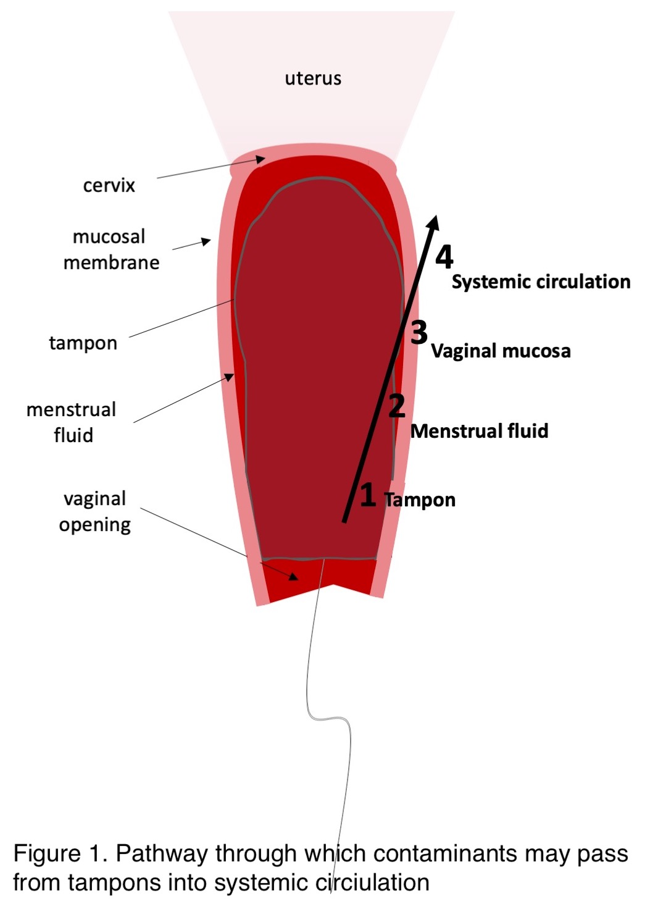

Menstruation is a vastly understudied topic in environmental health sciences, despite being a monthly occurrence for a large portion of the population. It is possible that the bodily process, and the products we use to manage it, may be a source of both exposure to potential environmental contaminants, such as pesticides and metals that may be found in the cotton used to manufacture tampons,1 and a source of excretion, for example of PFAS chemicals in the body.2 I first became interested in studying tampons in 2019, when my co-advisor Dr. Kioumourtzoglou presented on tampons as a source of exposure to metals in the BioCycle study at the 2019 International Society for Environmental Epidemiology annual conference.
Since then, we have begun working more earnestly on the problem of understanding if and how tampons might contribute to exposure to environmental chemicals. We are currently analyzing tampons from several major US brands to determine if they contain pesticides and metals. We will then determine the leachable fraction of such contaminants, if they exist, in menstrual blood samples collected from human subjects. We hypothesize that contaminants in tampons might leach out when tampons are saturated with menstrual fluid over the course of several hours of wear, and then cross the vaginal mucosa into systemic circulation (Figure 1).
While we are beginning to study this important topic, there are many important research directions to explore:
Add image from lab.
In the Study of Environment, Lifestyle and Fibroids (SELF) we are currently investigating relationships between tampon use and blood metal concentrations.
1 Upson K, Shearston JA, Kioumourtzoglou MA. (2022).
Menstrual Products as a Source of Environmental Chemical Exposure: A
Review from the Epidemiologic Perspective. Curr Environ Health Rep; 9,
38-52. doi: 10.1007/s40572-022-00331-1
2 Upson K,
Shearston JA, Kioumourtzoglou MA. (2022). An Epidemiologic Review of
Menstrual Blood Loss as an Excretion Route for Per- and Polyfluoroalkyl
Substances. Curr Environ Health Rep; 9, 29-37. doi:
10.1007/s40572-022-00332-0